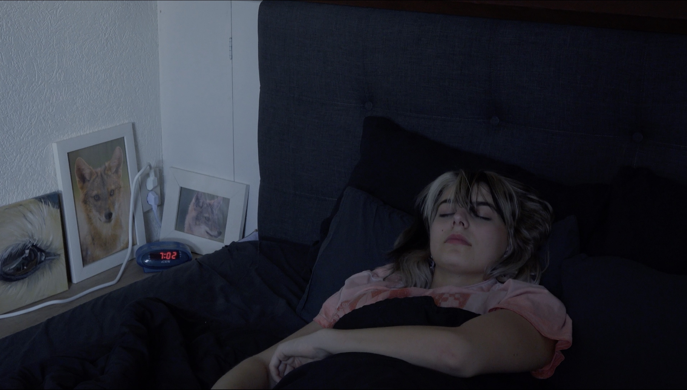
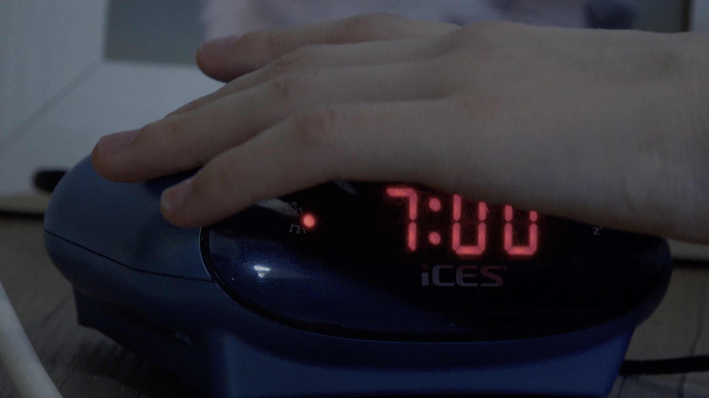

Wake Up
Projectbeschrijving
In deze video van ongeveer 45 seconden wordt bij de kijker een gevoel van verwarring opgeroepen wanneer een meisje wakker wordt en uit bed stapt, maar vast in een tijd-loop waar ze maar niet uit lijkt te komen. De verwarring wordt opgeroepen door de loop waar het meisje in vast lijkt te zitten, het gebrek aan ritme in de video, en de afwisseling tussen statische en hand-held shots.
Mijn rol
Voor deze video heb ik het verhaal en storyboard bedacht, tijdens het filmen geregisseerd, en daarna de video bewerkt.

